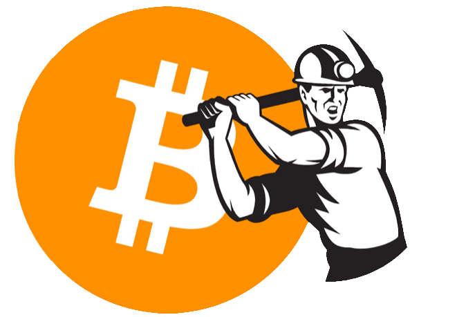

Биткойн (на английски: Bitcoin, получено от бит (на английски: bit) и монета (на английски: coin)) е платежна система с отворен код, основана на P2P разпределена мрежова архитектура, подсигурена от блокчейн технология и работеща с едноименна единица биткойн, наричана виртуална валута или криптовалута, макар че не отговаря на общоприетата дефиниция за валута.
Същност
Биткойн е споделена в Интернет счетоводна система за поддръжка на индивидуални сметки. Тя работи на принципа на P2P мрежа със софтуер с отворен код, която е напълно децентрализирана, няма централен администратор, нито пък е контролирана от някоя институция като например централна банка. Това дава основание на Министерство на финансите на САЩ да я нарече децентрализирана валута.
Добиване
Платежните единици биткойн се създават като възнаграждение за извършена изчислителна работа по криптиране, при която потребителите проверяват съществуващите блокове от блоковата верига и създават нови с помощта на изчислителната мощ на компютрите си. За да е легитимен, всеки блок трябва да съдържа доказателство за извършената работа, което подлежи на проверка от другите участници, когато на свой ред получат нов блок за изчисление. Процесът на придобиване чрез изчисления се нарича „добиване“ или „копаене“ (на английски: mining или на английски: digging). Добиването е замислено така, че да са необходими значителни изчислителни ресурси, а наличното количество блокове да остава оскъдно. Наименованието е заимствано от други видове добив на оскъдни ресурси (например на злато), които изискват значително време и производствени ресурси. Колкото повече изчислителна мощ се включва в добиването, толкова повече сложността на математическата задача се увеличава, като по този начин скоростта на добиване винаги остава ограничена и предсказуема.
Всеки може да прави виртуални монети, използвайки изчислителните мощности на компютъра си за решаването на математически задачи с увеличаваща се сложност. При всеки успешно преминат етап на изчисление на масив от големи числа (т. нар. хеширане) се получават по 25 биткойна. Участниците в изчисленията обаче обикновено са повече от един и биткойните се делят помежду им, в зависимост от тяхното участие. При създаването на биткойн системата, изчисленията са били сравнително прости, което е генерирало бързо дигиталните монети и не е налагало използването на супер мощни процесори. С течение на времето този ресурс става все по-труден за добиване. За да могат да се генерират биткойни, днес е необходимо много компютърно време, мощни процесори и висок клас видео карти.
„Паричната маса“ на биткойните е предопределена от същността на генерирането им. Към 2014 в обращение има над 12 милиона биткойни, като на всеки 10 минути се създават приблизително 25 биткойна. Общото им количество обаче има установена горна граница от 21 милиона и на всеки четири години скоростта на добиване се намалява наполовина. Това означава, че нови биткойни ще продължат да се създават в бъдещите сто години.
През юни 2014 търговската марка Bitcoin, регистрирана в Япония и Европейския съюз, е обявена за продажба.
Регистър на транзакциите
Основен елемент от платежната система е публичният регистър на транзакциите (счетоводна книга, на английски: public ledger) Биткойн (с главно Б) с публичен списък на всички извършени транзакции, реализиран като блокова верига. Той се записва като файл на всеки компютър от Биткойн мрежата, а количеството валута биткойн (с малко б) е балансът по индивидуалната сметка в него. Това позволява на всеки потребител да провери (валидира) валидността на всяка транзакция. За функционирането и защитата на платежната система се използват криптографски методи, а автентичността на всички транзакции е защитена с цифрови подписи. Регистърът се съхранява в партньорската мрежа на всеки 10 минути. Потвърждението на записването на бъдещи транзакции (сделки) прави тези преди тях все по-неизменни. Една сделка обикновено се счита за потвърдена след шест потвърдени записвания (около 1 час).
Биткойн не се управлява като типичните валути – тук няма централна банка или централна организация. Вместо това има интернет базирана партньорска мрежа. Паричното предлагане е автоматизирано и се предоставя на сървъри или така наречените „биткойн копачи“ или “миньори“, които потвърждават биткойн транзакциите, като ги добавят към децентрализиран и архивиран регистър на транзакциите приблизително на всеки 10 минути.
Регистърът на транзакциите се удостоверява от крайните потребители чрез дигитални подписи (подобни на потребителско име и парола) и се увеличава чрез изчисления от различна трудност, които се извършват от специални сървъри, наречени биткойн копачи или миньори. Всяка 10-минутна част от регистъра със сделките отговаря на определено количество биткойни, което копачите получават (и които после могат да ги продават по собствена преценка), след като тази част е добавена към регистъра и е потвърдена от другите копачи. Количеството биткойни зависи от това колко дълго е работила мрежата и какви такси по транзакциите са платени.
Към 2013 г. с всеки 10-минутен блок се генерират 25 нови биткойна. Количеството е намалено наполовина до 12.5 биткойна през 2017 г. То ще се намалява на всеки 4 години до достигането на твърд общ лимит от 21 млн. биткойна през 2140 г. Количеството биткойни в обращение към момента може да се види на bitcoincharts.com.
Освен чрез „добиване“, биткойни могат да се получават срещу продукти, услуги или други валути.